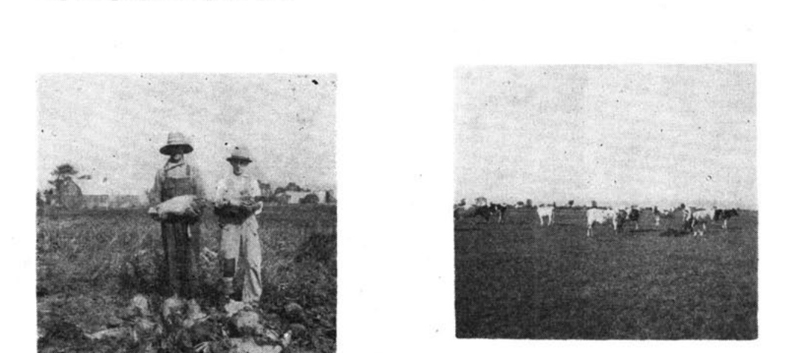
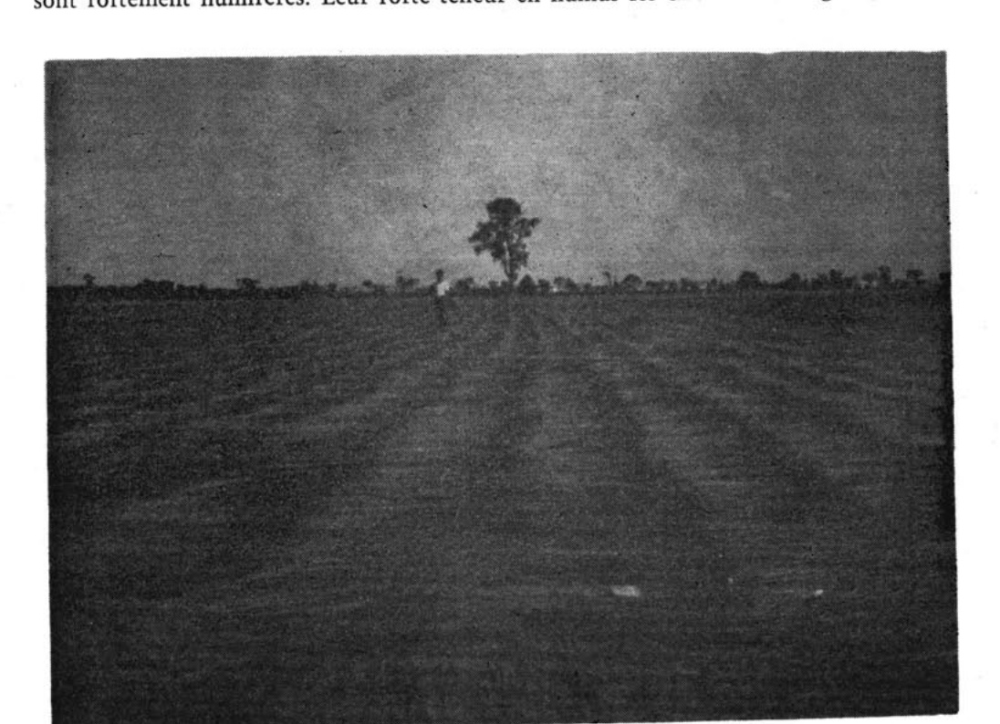
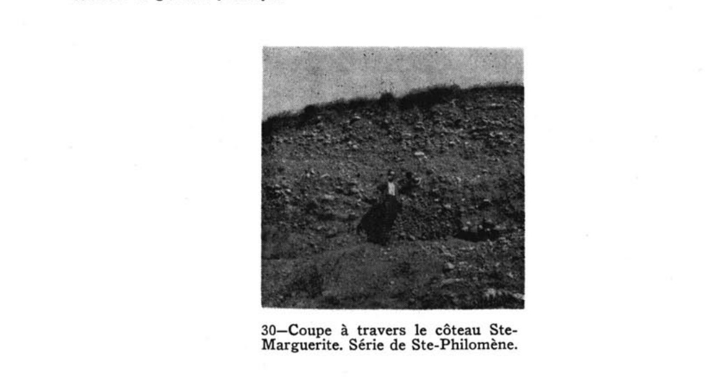
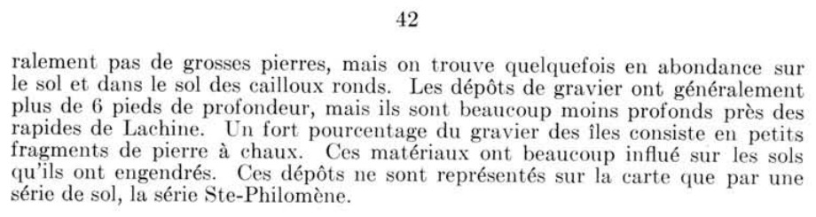
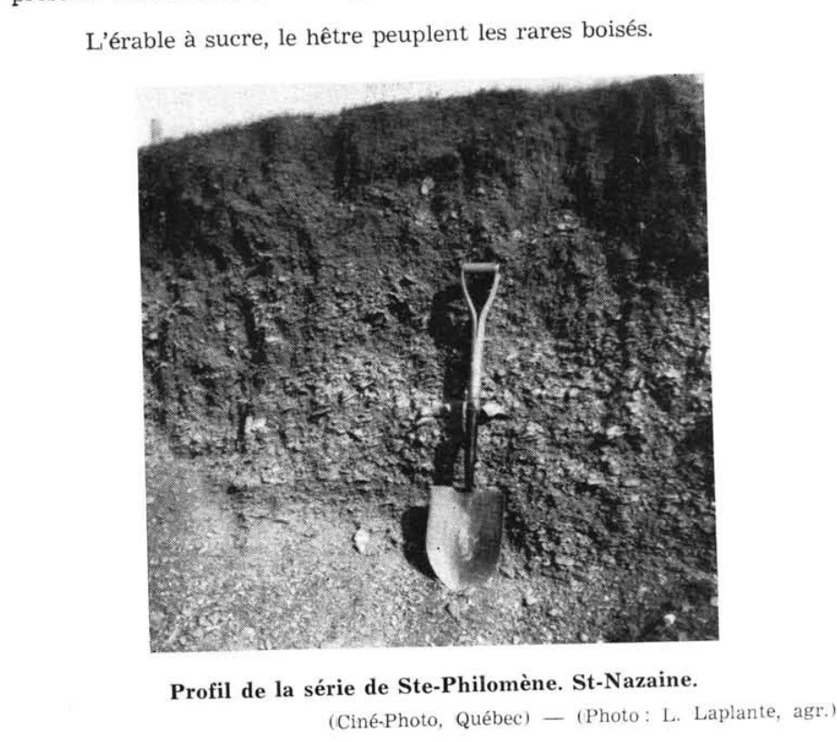

Identification & Caractéristiques Générales
Les sols de la série Sainte-Philomène se développent sur des dépôts fluvio-glaciaires et des deltas sablo-graveleux caractérisés par une forte proportion d'éléments carbonatés, souvent associés à des eskers ou à des crêtes littorales et terrasses de faible amplitude. Sur le plan géomorphologique, ces formations forment des reliefs topographiques ondulés à légèrement vallonnés, présentant des pentes généralement faibles à modérées qui favorisent un bon ruissellement de surface. Le matériau parental est constitué de graviers, de cailloux et de sables grossiers d'origine mixte, incluant des fragments calcaires, dolomitiques ainsi que diverses roches ignées et sédimentaires acides, le substratum et le sous-sol recelant parfois des débris coquilliers et des carbonates libres décelables par test à l'acide.
Le profil morphologique se caractérise par une texture dominante de type franc sableux à franc sablo-graveleux, parsemée en surface et dans le profil de cailloux et de galets arrondis, tandis que les blocs grossiers demeurent généralement rares, hormis dans certaines phases locales plus rocheuses d'origine érosive. Le drainage naturel varie de bon à excessivement rapide en raison de la forte perméabilité du profil et de la libre infiltration des eaux pluviales. Par conséquent, la capacité de rétention en eau utile est faible à modérée, exposant le profil à des déficits hydriques temporaires lors des périodes de sécheresse estivale. La réaction du sol (pH) dans la couche arable se situe généralement autour de la neutralité ou légèrement sous-acide (voisine de 6,5), avec une présence marquée de calcium libre héritée de la lithologie calcaire du matériau d'origine.
Sur le plan agronomique, ces sols conviennent particulièrement bien à la culture de la luzerne, ainsi qu'à la production de certaines cultures horticoles, de primeurs et de vergers (notamment le pommier), tandis que les plantes à enracinement superficiel et les grandes cultures exigeantes en eau y manifestent des rendements plus limités en raison de la faible réserve hydrique. Les contraintes majeures à la mise en valeur agricole résident dans la pierrosité superficielle nécessitant des épierrages périodiques, l'abrasivité du matériel graveleux pour les instruments de travail du sol, ainsi que la vulnérabilité au stress hydrique lors des épisodes arides. Les interventions d'aménagement requièrent principalement un suivi rigoureux de la fertilité calcique et organique, l'irrigation d'appoint pour les cultures à haute valeur ajoutée, ainsi qu'une gestion adaptée du travail cultural pour préserver la structure de ces sols légers.
Classification Taxonomique & Environnement Pédologique
| Ordre Pédologique | Brunisolique |
|---|---|
| Grand Groupe (SCSS) | Brunisol eutrique |
| Sous-Groupe Taxonomique | Brunisol eutrique éluvié |
| Famille Pédologique | Squelettique-sableuse, mixte sableux, alcalin (calcaire) |
| Mode de Dépôt Parental | Fluvio-glaciaire |
| Classe de Drainage Naturel | Rapidement drainé |
| Régime Thermique & Humidité | Doux / Subaride |
Description Morphologique du Profil Type
Séquences génétiques des horizons pédologiques caractérisant le profil type représentatif de la série Sainte-Philomène :
Profil cultivé (agricole) — Comté de Châteauguay
✓ Source : Comté de Châteauguay — Page 93Couleur Munsell : 10YR 4/2
Structure & Consistance : Granulaire bien développée
Description morphologique : Limon sablo-argileux gravelo-caillouteux moyennement humifère, de teinte brun-gris foncé (10YR 4/2) à l'état sec. Structure granulaire bien développée. Consistance très friable. Les nombreux cailloux arrondis et parfois la partie fine du sol réagissent vivement à l'HCl dilué; pH : 7.0 ··· 7.6.
Couleur Munsell : 10YR 5/3
Structure & Consistance : Polyédrique à granulaire
Description morphologique : Horizon d'éluviation ou d'appauvrissement de teintes plus claires que les horizons qui le surmontent ou qui suivent. Coloration brunc à brun pâle à l'état sec (10YR 5/3). S'étend en une bande sinueuse de 2 à 6 pouces d'épaisseur ou en poches pouvant atteindre 12 à 15 pouces, spécialement là où le sol est sablonneux. Le gravier seul fait effervescence au contact de HCl dilué.
Profil forestier (sous boisé) — Comté de Argenteuil
✓ Source : Comté de Argenteuil — Page 55Couleur Munsell : Non précisée
Structure & Consistance : Polyédrique à granulaire
Description morphologique : Terre franche sablo-graveleuse brun foncé; quelques petits granules parmi les particules monogranulaires; plusieurs cailloux et très peu de grosses pierres; meuble; pH 6.5-7.2.
Couleur Munsell : Non précisée
Structure & Consistance : Polyédrique à granulaire
Description morphologique : Terre franche sablo-graveleuse brun jaunâtre foncé ou brune à terre franche sableuse caillouteuse; surtout sans structure; meuble et poreuse; carbonates libres généralement présents; pH 7.2-7.7.
Couleur Munsell : Non précisée
Structure & Consistance : Polyédrique à granulaire
Description morphologique : Gravier pierreux brun grisâtre; couches de gravier fin alternant avec des couches de cailloux; quelques grosses pierres; très poreux; pierres et gravier parfois enrobés ou cimentés de carbonates; pH 7.7-8.1.
Profil représentatif — Comté de Drummond
✓ Source : Comté de Drummond — Page 99Couleur Munsell : 10YR 2/2, 10YR 2/1
Structure & Consistance : Moyennement granulée
Description morphologique : Loam sablo-caillouteux humifère, brun très foncé (10 YR 2/2) à l'état sec, noir (10 YR 2/1) à l'état humide; structure moyennement granulée, fortement développée; consistance très friable. La réaction (pH 5.7) est moyennement acide.
Couleur Munsell : 10YR 6/4, 10YR 4/4
Structure & Consistance : Nuciforme bien développée
Description morphologique : Loam sablo-graveleux, brun jaune clair à l'état sec (10 YR 6/4), brun jaune foncé (10 YR 4/4) à l'état humide; structure nuciforme bien développée; consistance friable. Cet horizon contient souvent des coulisses de matière organique de couleur noire. La réaction (pH 5.8) est moyennement acide.
Couleur Munsell : 10YR 5/3, 10YR 4/3
Structure & Consistance : Nuciforme très bien développée
Description morphologique : Gravier sablo-limoneux, brun (10 YR 5/3) à l'état sec, brun foncé (10 YR 4/3) à l'état humide; structure nuciforme très bien développée. La plupart des cailloux font effervescence à l'acide chlorhydrique dilué. La réaction (pH 6.3) est faiblement acide.
Couleur Munsell : 5Y 6/3, 2.5Y 4/4
Structure & Consistance : Polyédrique à granulaire
Description morphologique : Gravier sablo-caillouteux de couleur très variée suivant la nature lithologique du gravier; la couleur prédominante de la partie fine est olive pâle (5 Y 6/3) à l'état sec, olive (2.5 Y 4/4) à l'état humide; sans structure, ni consistance. Les roches et le sol font toujours effervescence à l'acide chlorhydrique dilué. La réaction (pH 7.8) est très alcaline.
Profil représentatif — Comté de Lotbinière
✓ Source : Comté de Lotbinière — Page 40Couleur Munsell : 10YR 4/2
Structure & Consistance : Granulaire bien développée
Description morphologique : Loam à loam argileux gris brun à gris brun foncé (10YR 4/2). Souvent pierreux. Structure granulaire bien développée. Consistance très friable. La teneur en sable ou gravier calcaire est variable et influence le pH, lequel varie de 4.8 à 7.5.
Couleur Munsell : 10YR 6/2
Structure & Consistance : Particulaire
Description morphologique : Loam sableux à graveleux de teinte brune à brun pâle, à l'état sec (10YR 6/2); structure particulaire. S'étend généralement en une bande fortement sinueuse et d'épaisseur variable; présente parfois, à la partie supérieure, un mince horizon A 2 podzolique (profil double ou superposé, en formation). Plus ou moins graveleux; pH variable, généralement de 5.5 à 6.0.
Couleur Munsell : 7.5YR 5/6
Structure & Consistance : Polyédrique à granulaire
Description morphologique : Horizon mal défini. Lorsque le sol est très acide, une coloration brun vif apparaît (7.5YR 5/6-5/8). Loam friable. Cet horizon indique plutôt l'évolution du gris brun podzolique vers le podzol; pH : 5.2-5.8.
Couleur Munsell : 7.5YR 3/2
Structure & Consistance : Nuciforme bien développée
Description morphologique : Horizon d'accumulation maximum des silicates argileux. Structure nuciforme bien développée, consistance ferme, mais friable. Cet horizon épouse les contours de l'horizon A 2 (G.B.P.) Loam argileux brun à brun foncé (7.5YR 3/2-4/2); pH: 7.0-7.5.
Couleur Munsell : Non précisée
Structure & Consistance : Polyédrique à granulaire
Description morphologique : Roche-mère: sable et gravier gris brun pâle, interstratifiés de cailloux calcaires arrondis et d'une certaine proportion de roches lignées (matériaux laurentiens). Le matériel donne une vive effervescence au contact de HCl dilué; pH : 7.5-8.3.
Profil naturel (vierge) — Sols de l'île de Montréal
✓ Source : Sols de l'île de Montréal — Page 40Couleur Munsell : Non précisée
Structure & Consistance : Polyédrique à granulaire
Description morphologique : Terre franche sableuse ou graveleuse brun grisâtre foncé; granules fins friables et grains simples; pH 6·5-7·0.
Couleur Munsell : Non précisée
Structure & Consistance : Grenue
Description morphologique : Terre franche sableuse à sablo-graveleuse brun jaunâtre, se dégradant en brun jaunâtre pâle à la partie inférieure; généralement à structure grenue; plutôt meuble; pH 6·5 (Cet horizon peut être très mince ou même absent, et remplacé par une substance calcaire brune dont le pH varie de 7·3 à 7·7.)
Couleur Munsell : Non précisée
Structure & Consistance : Nuciforme
Description morphologique : Terre franche argilo-graveleuse brun foncé; assez ferme; structure nuciforme; pH 7·3 (Cette couche n'est pas située à une profondeur uniforme, mais forme des ondulations rapprochées.)
Couleur Munsell : Non précisée
Structure & Consistance : Polyédrique à granulaire
Description morphologique : Gravier gris brunâtre pâle et gravier caillouteux irrégulièrement stratifié avec lisières sableuses; contient quelques grosses pierres; très poreux; contient du schiste calcaire et des fragments de grès souvent enrobés de carbonate de calcium blanc; pH 7·9.
Profil représentatif — Comté de Bagot
✓ Source : Comté de Bagot — Page 134Couleur Munsell : 10YR 4/2
Structure & Consistance : Granulaire
Description morphologique : Loam argileux gravelo-caillouteux moyennement humifère, de teinte brun-gris foncé (10YR 4/2). Structure granulaire. Consistance friable. Il arrive que cet horizon fasse effervescence au contact de HCl dilué. pH 7.2 - 7.4
Couleur Munsell : 10YR 5/3
Structure & Consistance : Polyédrique à granulaire
Description morphologique : Horizon de teinte plus claire que les autres horizons du profil. Brun à brun pâle à l'état sec (10YR 5/3). Cet horizon est irrégulier et parfois absent.
Couleur Munsell : 7.5YR 6/4
Structure & Consistance : Granulaire
Description morphologique : Loam argileux gravelo-caillouteux brun pâle (7.5YR 6/4). Structure granulaire. Consistance légèrement compacte. Plus graveleux. pH 7.4
Couleur Munsell : 5YR 3/1
Structure & Consistance : Polyédrique à granulaire
Description morphologique : Loam sableux gravelo-caillouteux gris très foncé (5YR 3/1). Ces graviers et sables, d'origine fluvio-glaciaires sont nettement stratifiés et renferment beaucoup de coquillages. Très vive effervescence avec HCl dilué.
Profil cultivé (agricole) — Comté de Soulanges — Phase très rocheuse
✓ Source : Comté de Soulanges — Page 31Couleur Munsell : Non précisée
Structure & Consistance : Polyédrique à granulaire
Description morphologique : Litière de feuilles semi-décomposées.
Couleur Munsell : Non précisée
Structure & Consistance : Particulaire granulée friable
Description morphologique : Terre franche gris brun foncé, variant de sableuse à graveleuse, granulaire et à structure particulaire granulée friable, pH 6.5-7.0.
Couleur Munsell : Non précisée
Structure & Consistance : Particulaire
Description morphologique : Terre franche sableuse à graveleuse brun jaunâtre passant graduellement avec la profondeur au brun jaunâtre pâle ou au gris brunâtre, mouvante; structure particulaire, renferme quelques galets, pH 6.5-7.0.
Couleur Munsell : Non précisée
Structure & Consistance : Nuciforme
Description morphologique : Terre franche graveleuse brun ou brun foncé à terre franche argilo-graveleuse, assez ferme, structure nuciforme. Cette couche ondule sous forme de vagues et en bandes minces; dans les cas extrêmes, la crête des vagues se trouve à 4 pouces sous la surface, alors que le fond de la vague peut descendre jusqu'à une profondeur de 3 pieds ou plus, pH 7.0-7.5.
Couleur Munsell : Non précisée
Structure & Consistance : Polyédrique à granulaire
Description morphologique : Sable et gravier gris brunâtre pâle irrégulièrement stratifiés avec beaucoup de galets et quelques pierres; les fragments ont une origine lithologique mixte, mais les fragments de pierres à chaux prédominent ordinairement, pH 7.5-8.3.
Profil représentatif — Comté de Huntingdon
✓ Source : Comté de Huntingdon — Page 196Couleur Munsell : 10YR 4/2
Structure & Consistance : Granulaire bien développée
Description morphologique : Limon sablo-argileux gravelo-caillouteux moyennement humifère, de teinte brun gris foncé (10YR 4/2) à l'état sec. Structure granulaire bien développée. Consistance très friable. Les nombreux cailloux arrondis et parfois la partie fine du sol réagissent vivement à l'HCl dilué. pH: 7.0 — 7.6.
Couleur Munsell : 10YR 5/3
Structure & Consistance : Polyédrique à granulaire
Description morphologique : Horizon éluviaux ou de lessivage, de teintes plus claires que les horizons supérieurs et inférieurs. Brun à brun pâle à l'état sec (10YR 5/3). S'étend en une bande sinueuse de 2 à 6 pouces d'épaisseur ou en poches pouvant atteindre 12 à 15 pouces, spécialement là où le sol est sablonneux. Le gravier seul fait effervescence au contact de HCl dilué.
Couleur Munsell : Non précisée
Structure & Consistance : Polyédrique à granulaire
Description morphologique : Horizon de transition généralement peu visible.
Couleur Munsell : 10YR 5/4, B 2/1
Structure & Consistance : Polyédrique à granulaire
Description morphologique : Horizon illuvial ou d'accumulation, formant une bande sinueuse et épousant les contours de l'horizon A 2 ou B 2 -1ca. Limon sablo-argileux à limon fin argilo-graveleux montrant une texture plus argileuse que dans les autres horizons. Coloration brun jaune (10YR 5/4) à l'état sec. Agrégats fermes, mais se séparant facilement. Donne une vive effervescence au contact de HCl dilué. pH: 8.0.
Couleur Munsell : 10YR 4/1
Structure & Consistance : Polyédrique à granulaire
Description morphologique : Roche-mère. Sables et graviers d'origine fluvio-glaciaire, éléments de forme arrondie, nettement stratifiés en couches horizontales ou obliques et renfermant toujours, à des profondeurs variables, des lits de coquillages marins. Coloration grise à gris foncé (10YR 4/1) à l'état sec, variable suivant la nature lithologique du gravier calcaire. Donne invariablement une très vive effervescence au contact de HCl dilué.
Profil représentatif — Comté de Huntingdon
✓ Source : Comté de Huntingdon — Page 197Couleur Munsell : Non précisée
Structure & Consistance : Très finement mietteuse
Description morphologique : Limon sableux, gris noir, structure très finement mietteuse, friable, matière organique bien décomposée. pH: 7.5.
Couleur Munsell : Non précisée
Structure & Consistance : Mietteuse faiblement développée
Description morphologique : Limon sablo-graveleux, brun grisâtre; très friable à meuble, grenu à structure mietteuse faiblement développée. pH: 6.0.
Couleur Munsell : Non précisée
Structure & Consistance : Grossièrement nuciforme
Description morphologique : Limon sablo-graveleux, brun jaune à brun pâle, structure grossièrement nuciforme, plus compact et plus cimenté que ci-dessus, moins caillouteux que les horizons adjacents. Se présente sous forme de langues ou couches sinueuses. pH: 7.7.
Couleur Munsell : Non précisée
Structure & Consistance : Polyédrique à granulaire
Description morphologique : Limon sableux ou sable limono-graveleux, brun rouge foncé à brun foncé, plus meuble que ci-dessus. pH: 7.8.
Couleur Munsell : Non précisée
Structure & Consistance : Polyédrique à granulaire
Description morphologique : Sable limono-graveleux à sable graveleux. Principalement constitué de calcaire de Beekmantown, de Trenton et de Black-River. Matériaux stratifiés, avec lits de limon argileux.
Profils Photographiques & Planches de Terrain
Documents iconographiques, figures pédologiques et coupes de terrain documentées dans les mémoires d'inventaire pour de la série Sainte-Philomène :








Propriétés Physico-Chimiques & Analyses de Laboratoire
| Horizon | Prof. (pces) | pH | C org. % | N % | C/N | Sable grossier % | Sable fin % | Sable tot. % | Limon % | Argile % | Ca éch. | Mg éch. | K éch. | Na éch. | Bases tot. | C.E.C. | Saturation % |
|---|---|---|---|---|---|---|---|---|---|---|---|---|---|---|---|---|---|
| Profil cultivé | N | 1 | 1 | 1 | 1 | 1 | 1 | 1 | 1 | 1 | 1 | 1 | 1 | 1 | 1 | 1 | LS |
| Moyenne | 10,2 | 21,1 | 16,7 | 7,0 | 61,0 | 25,2 | 13,8 | 6,8 | 1,34 | 6,5 | 1,78 | 0,69 | 0,20 | 16,83 | 355,6 | ||
| Inférieure | - | - | - | - | - | - | - | - | - | - | - | - | - | - | - | ||
| Supérieure | - | - | - | - | - | - | - | - | - | - | - | - | - | - | - | ||
| CV | - | - | - | - | - | - | - | - | - | - | - | - | - | - | - | ||
| Couche de surface | N | 1 | 1 | 1 | 1 | 1 | 1 | 1 | 1 | 1 | 1 | 1 | 1 | 1 | 1 | 1 | L |
| Moyenne | 11,9 | 4,1 | 4,2 | 8,5 | 37,8 | 39,5 | 22,7 | 7,5 | 2,72 | 11,5 | 3,41 | 0,22 | 0,03 | 17,91 | 5,7 | ||
| Inférieure | - | - | - | - | - | - | - | - | - | - | - | - | - | - | - | ||
| Supérieure | - | - | - | - | - | - | - | - | - | - | - | - | - | - | - | ||
| CV | - | - | - | - | - | - | - | - | - | - | - | - | - | - | - | ||
| Sous-sol | N | 2 | 2 | 2 | 2 | 2 | 2 | 2 | 2 | 2 | 2 | 2 | 2 | 2 | 2 | 2 | |
| Moyenne | 20,8 | 21,6 | 7,6 | 3,9 | 73,0 | 18,3 | 8,8 | 7,6 | 0,46 | 8,4 | 1,57 | 0,20 | 0,08 | 9,69 | 36,1 | ||
| Inférieure | 4,4 | 0,0 | 0,0 | 0,0 | 0,0 | 0,0 | 0,0 | 6,9 | 0,00 | 0,0 | 0,73 | 0,00 | 0,00 | 5,19 | 0,0 | ||
| Supérieure | 37,2 | 125,8 | 36,3 | 13,0 | 170,5 | 89,9 | 34,7 | 8,3 | 7,93 | 178,0 | 2,80 | 0,73 | 0,33 | 17,44 | nd*** | ||
| CV | 17,7 | 108,0 | 85,2 | 53,3 | 30,0 | 88,0 | 65,9 | 2,0 | 106,1 | 29,4 | 9,4 | 45,7 | 56,3 | 5,2 | 31,5 | ||
| Substratum | N | 2 | 2 | 2 | 2 | 2 | 2 | 2 | 2 | 2 | 2 | 2 | 2 | 2 | 2 | 2 | |
| Moyenne | 29,0 | 22,8 | 9,8 | 2,0 | 86,3 | 8,4 | 5,4 | 8,2 | 0,09 | 15,1 | 0,79 | 0,10 | 0,08 | 8,45 | 15,2 | ||
| Inférieure | 0,0 | 0,0 | 0,0 | 1,4 | 82,5 | 0,5 | 1,2 | 8,1 | 0,00 | 9,4 | 0,61 | 0,10 | 0,02 | 0,99 | 0,0 | ||
| Supérieure | 73,8 | 83,7 | 50,2 | 2,6 | 90,1 | 16,2 | 9,5 | 8,3 | 0,42 | 23,7 | 0,99 | 0,10 | 0,14 | 43,88 | 449,6 | ||
| CV | 34,6 | 60,0 | 92,4 | 7,1 | 1,0 | 21,2 | 17,2 | 0,2 | 64,7 | 3,5 | 4,1 | 0,0 | 17,0 | 15,5 | 26,7 |
Particularités Régionales, Phases & Variantes Pédologiques
Déclinaisons régionales, faciès texturaux, phases d'érosion ou de pierrosité et variantes cartographiées par étude pour de la série Sainte-Philomène :
| Étude Régionale | Symbole | Appellation / Phase / Variante | Différenciation avec la série type (Analyse pédologique) |
|---|---|---|---|
| Comté de Argenteuil | Ph |
Sainte-Philomène loam sableux | Modalité modale de référence (type de base de la série). |
| Comté de Bagot | Ph |
Sainte-Philomène loam sableux graveleux à graveleux caillouteux | Phase graveleuse à perméabilité accrue et réserve utile diminuée. |
| Comté de Huntingdon | Ph |
Sainte-Philomène loam sableux caillouteux | Conforme à la série type de référence (caractéristiques texturales et drainage identiques). |
| Comté de Châteauguay | Ph |
Sainte-Philomène loam sablo-argileux graveleux et caillouteux | Phase graveleuse à perméabilité accrue et réserve utile diminuée; Faciès argileux plus lourd et compact que le loam sableux de référence. |
| Comté de Drummond | Ph |
Sainte-Philomène loam sableux graveleux | Phase graveleuse à perméabilité accrue et réserve utile diminuée. |
| Comté de Lotbinière | Ph |
Sainte-Philomène loam graveleux | Phase graveleuse à perméabilité accrue et réserve utile diminuée; Faciès loameux plus fin et équilibré que le loam sableux de référence (meilleure rétention en eau et nutriments). |
| Les sols de l’Île de Montréal | Ph |
Sainte-Philomène loam sableux | Conforme à la série type de référence (caractéristiques texturales et drainage identiques). |
| Comté de Napierville | PHbp |
Sainte-Philomène 3-8 % de pente légèrement à modérément pierreux | Phase légèrement à modérément pierreuse (obstruction mécanique modérée). |
| Comté de Saint-jean | PHb |
Sainte-Philomène loam sableux graveleux 3-8% de pente | Phase graveleuse à perméabilité accrue et réserve utile diminuée. |
PHbp |
Sainte-Philomène loam sableux graveleux 3-8% de pente légèrement à modérément pierreux | Phase légèrement à modérément pierreuse (obstruction mécanique modérée). | |
| Comté de Soulanges | Ph |
Sainte-Philomène loam graveleux | Phase graveleuse à perméabilité accrue et réserve utile diminuée; Faciès loameux plus fin et équilibré que le loam sableux de référence (meilleure rétention en eau et nutriments). |
| Comté de St-jean | SEO |
SAINTE-PHILOMÈNE (PH) | Conforme à la série type de référence (caractéristiques texturales et drainage identiques). |
| Sols de l'île de Montréal | SEO |
SÉRIE STE-PHILOMÈNE | Conforme à la série type de référence (caractéristiques texturales et drainage identiques). |
Distribution Pédo-Paysagère & Représentativité Cartographique (Couverture PPS 2026)
- Ménard sableux graveleux (MEN) — co-occurrente dans 8 polygone(s)
- Saint-Bernard loam sableux fin à loam (SBE) — co-occurrente dans 6 polygone(s)
- Bedford loam sableux (BDF) — co-occurrente dans 4 polygone(s)
Aptitudes Agronomiques, Hydropédologie & Conservation des Sols
Indicateurs Hydropédologiques & Vulnérabilité à l'Érosion (BDHP 2026)
Interprétation BDHP : Potentiel de ruissellement faible. Sols à infiltration rapide (sables profonds, graviers bien drainés).
Classement selon l'Inventaire des Terres du Canada (ITC / CLI) : Classe 3w.
- Potentiel agricole : Terroir adapté aux cultures régionales selon la texture dominante et la régie de drainage.
- Contraintes majeures : Rapidement drainé. Risque d'engorgement temporaire ou d'excès d'eau printanier.
- Gestion & Aménagement : Drainage souterrain ou superficiel préconisé sur les terres planes. Chaulage et apport organique régulier selon les bilans agronomiques.
- Cultures adaptées : Grandes cultures (maïs, soya, céréales), prairies fourragères et cultures maraîchères selon le contexte géomorphologique.